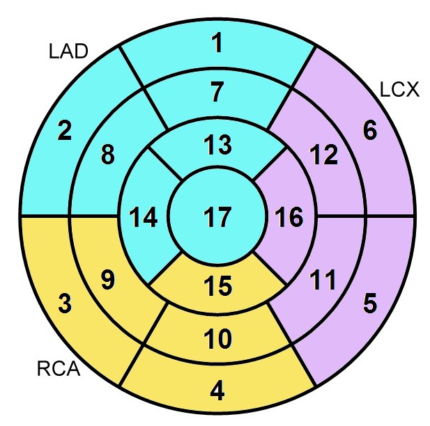

Kardio-Template generisch
Befund
Vergleichsuntersuchung
keine
vorliegend
Bildqualität
gut
reduziert, diagnostisch
nicht diagnostisch
Kardiale Anatomie / Funktion
Größe linker Ventrikel
normal groß
dilatiert
Hypertrophie
keine
fokale Hypertrophie
konzentrische Hypertrophie
Globale LV Funktion
normal
leichtgradig eingeschränkt
mittelgradig eingeschränkt
hochgradig eingeschränkt
Segmentale Wandbewegungsstörung
keine
Hypokinesie
Akinesie
Dyskinesie

Gewebeeigenschaften
Vitalität
ja, kein LGE
nein, LGE vom Infarkt-Typ
nein, LGE vom NICHT-Infarkt-Typ
MVO
-
nein
ja
Perfusionsdefizit
-
nein
ja
Ödem
-
nein
ja
Sonstige Auffälligkeiten
Beurteilung
Diagnose:
-
Normalbefund
KHK ohne Ischämie
KHK mit Ischämienachweis
KHK mit akutem Infarkt
Myokarditis (erworbene Kardiomyopathie)
Hypertrophe Kardiomyopathie [H(o)CM]
Speichererkrankung
Non-Compaction Kardiomyopathie (NCCM)
Arrhythmogene Rechtsventrikuläre Kardiomyopathie (ARVC/D)
Dilatative Kardiomyopathie (DCM)